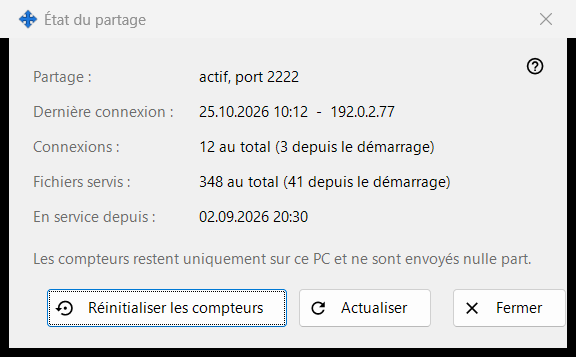
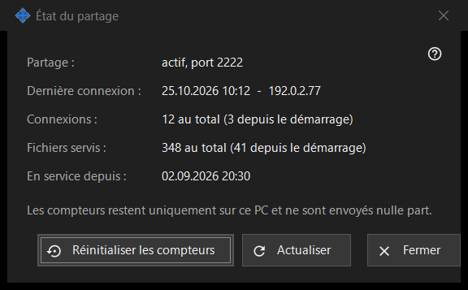

État du partage
Objectif
Affiche l'état actuel du partage et ses compteurs simples. Elle s'ouvre depuis le lien «Statistiques» de la fenêtre principale.


Dans cet ordre
- Lisez l'état en haut.
- Vérifiez la dernière connexion, le nombre de connexions et les fichiers servis.
- Appuyez sur «Actualiser» pour de nouvelles valeurs.
- Appuyez sur «Réinitialiser les compteurs» pour repartir de zéro.
- Appuyez sur «Fermer».
Les éléments
État
«Partage :» indique si le partage fonctionne et sur quel port, ou qu'il est arrêté, ou que le worker n'est pas disponible. «En service depuis :» indique quand le partage a démarré.
Compteurs
«Dernière connexion :» indique l'heure du dernier téléphone, ou «jamais». «Connexions :» et «Fichiers servis :» indiquent le total et, entre parenthèses, le nombre depuis le dernier démarrage. Les compteurs sont conservés uniquement sur ce PC et ne sont envoyés nulle part.
Actualiser et réinitialiser
«Actualiser» relit les valeurs depuis le serveur. «Réinitialiser les compteurs» demande d'abord confirmation : les valeurs précédentes ne peuvent pas être rétablies. Si la réinitialisation échoue, le bouton affiche «Échec de la réinitialisation». «Fermer» quitte la fenêtre.
Paramètres du gestionnaire · Paramètres de partage SFTP · Paramètres du serveur d’échange